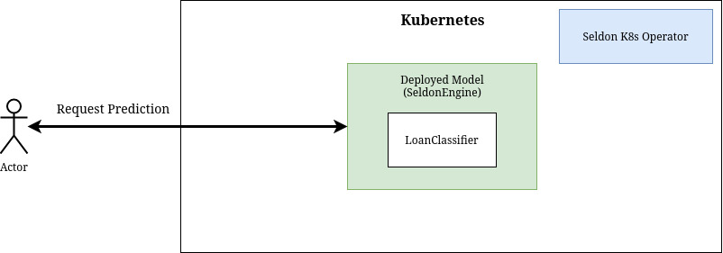
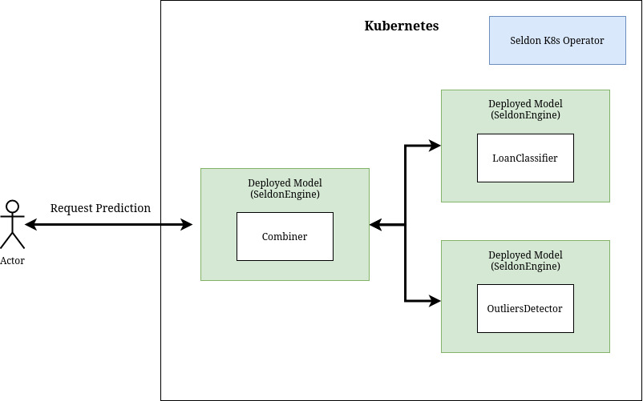

This page was generated from examples/outliers/alibi-detect-combiner/notebook.ipynb.
Seldon deployment of Alibi Outlier detector¶
Tne objective of this tutorial is to build a “loan approval” classifier equipped with the outliers detector from alibi-detect package. The diagram of this tutorial is as follows:
In this tutorial we will follow the following steps:
Train and test model to predict loan approvals
Train and test outliers detector
Containerise and deploy your models
Test your your new seldon deployment
Before you start¶
Make sure you install the following dependencies, as they are critical for this example to work:
Helm v3.0.0+
A Kubernetes cluster running v1.13 or above (minkube / docker-for-windows work well if enough RAM)
kubectl v1.14+
ksonnet v0.13.1+
kfctl 0.5.1 - Please use this exact version as there are major changes every few months
Python 3.6+
Python DEV requirements (we’ll install them below)
You can follow this notebook to setup your cluster.
Let’s get started! 🚀🔥
Install Python dependencies¶
In requirements-dev file you will find set of python dependencies required to run this notebook.
[1]:
!cat requirements-dev.txt
dill==0.3.1
xai==0.0.5
alibi==0.3.2
alibi-detect==0.2.0
seldon_core==1.0
scipy==1.1.0
numpy==1.15.4
scikit-learn==0.20.1
[ ]:
!pip install -r requirements-dev.txt
Train and test loanclassifier¶
We start with training the loanclassifier model by using a prepared python script train_classifier:
[2]:
!pygmentize train_classifier.py
import alibi
import dill
import numpy as np
from sklearn.preprocessing import StandardScaler, OneHotEncoder
from sklearn.impute import SimpleImputer
from sklearn.pipeline import Pipeline
from sklearn.compose import ColumnTransformer
from sklearn.ensemble import RandomForestClassifier
DATA_DIR = "pipeline/loanclassifier"
def load_data(train_size=30000, random_state=0):
"""Load example dataset and split between train and test datasets."""
print("Loading adult data from alibi.")
np.random.seed(random_state)
data = alibi.datasets.fetch_adult()
# mix input data
data_perm = np.random.permutation(np.c_[data.data, data.target])
data.data = data_perm[:, :-1]
data.target = data_perm[:, -1]
# perform train / test split
X_train, y_train = data.data[:train_size, :], data.target[:train_size]
X_test, y_test = data.data[train_size:, :], data.target[train_size:]
return data, X_train, y_train, X_test, y_test
def train_preprocessor(data):
"""Train preprocessor."""
print("Training preprocessor.")
# TODO: ask if we need np.random.seed(...) here
ordinal_features = [
n for (n, _) in enumerate(data.feature_names)
if n not in data.category_map
]
categorical_features = list(data.category_map.keys())
ordinal_transformer = Pipeline(steps=[
('imputer', SimpleImputer(strategy='median')),
('scaler', StandardScaler())
])
categorical_transformer = Pipeline(steps=[
('imputer', SimpleImputer(strategy='median')),
('onehot', OneHotEncoder(handle_unknown='ignore'))
])
preprocessor = ColumnTransformer(transformers=[
('num', ordinal_transformer, ordinal_features),
('cat', categorical_transformer, categorical_features)
])
preprocessor.fit(data.data)
return preprocessor
def train_model(X_train, y_train, preprocessor):
"""Train model."""
print("Training model.")
# TODO: ask if we need np.random.seed(...) here
clf = RandomForestClassifier(n_estimators=50)
clf.fit(preprocessor.transform(X_train), y_train)
return clf
def serialize_pipeline(preprocessor, clf):
"""Serialize preprocessor and model."""
print("Serializing preprocessor and model.")
with open(DATA_DIR + "/preprocessor.dill", "wb") as prep_f:
dill.dump(preprocessor, prep_f)
with open(DATA_DIR + "/model.dill", "wb") as model_f:
dill.dump(clf, model_f)
def main():
data, X_train, y_train, X_test, y_test = load_data()
preprocessor = train_preprocessor(data)
clf = train_model(X_train, y_train, preprocessor)
serialize_pipeline(preprocessor, clf)
return preprocessor, clf, data, X_train, y_train, X_test, y_test
if __name__ == "__main__":
main()
[3]:
!python3 train_classifier.py
Loading adult data from alibi.
Training preprocessor.
Training model.
Serializing preprocessor and model.
This script creates two dill-serialized files preprocess.dill and model.dill that are used by the Model class to make prediction:
[4]:
!pygmentize pipeline/loanclassifier/Model.py
import logging
import dill
import os
dirname = os.path.dirname(__file__)
class Model:
def __init__(self, *args, **kwargs):
"""Deserilize preprocessor and model."""
with open(os.path.join(dirname, "preprocessor.dill"), "rb") as prep_f:
self.preprocessor = dill.load(prep_f)
with open(os.path.join(dirname, "model.dill"), "rb") as model_f:
self.clf = dill.load(model_f)
def predict(self, X, feature_names=[]):
"""Run input X through loanclassifier model."""
logging.info("Input: " + str(X))
X_prep = self.preprocessor.transform(X)
output = self.clf.predict_proba(X_prep)
logging.info("Output: " + str(output))
return output
We will in a moment contenrize this Model. You can test how it will work from the notebook:
[5]:
import sys
sys.path.append("pipeline/loanclassifier")
from Model import Model
model = Model()
[6]:
import numpy as np
import xai
from train_classifier import load_data
data, X_train, y_train, X_test, y_test = load_data()
proba = model.predict(X_test)
pred = np.argmax(proba, axis=1)
xai.metrics_plot(y_test, pred)
Loading adult data from alibi.
[6]:
| target | |
|---|---|
| precision | 0.704545 |
| recall | 0.658497 |
| specificity | 0.913289 |
| accuracy | 0.852401 |
| auc | 0.785893 |
| f1 | 0.680743 |
Train and test outliers detector¶
We will now train the outliers detector using another prepared script train_detector:
[7]:
!pygmentize train_detector.py
import dill
import numpy as np
from alibi_detect.od import IForest
from alibi_detect.utils.data import create_outlier_batch
# from alibi_detect.utils.saving import save_detector, load_detector
# from alibi_detect.utils.visualize import plot_instance_score
from sklearn.preprocessing import StandardScaler
from sklearn.impute import SimpleImputer
from sklearn.pipeline import Pipeline
from sklearn.compose import ColumnTransformer
from train_classifier import load_data
DATA_DIR = "pipeline/outliersdetector"
def train_preprocessor(data):
"""Train preprocessor."""
print("Training preprocessor.")
ordinal_features = [
n for (n, _) in enumerate(data.feature_names)
if n not in data.category_map
]
ordinal_transformer = Pipeline(steps=[
('imputer', SimpleImputer(strategy='median')),
('scaler', StandardScaler())
])
preprocessor = ColumnTransformer(transformers=[
('num', ordinal_transformer, ordinal_features),
])
preprocessor.fit(data.data)
return preprocessor
def train_detector(data, preprocessor, perc_outlier=5):
"""Train outliers detector."""
print("Initialize outlier detector.")
od = IForest(threshold=None, n_estimators=100)
print("Training on normal data.")
np.random.seed(0)
normal_batch = create_outlier_batch(
data.data, data.target, n_samples=30000, perc_outlier=0
)
X_train = normal_batch.data.astype('float')
# y_train = normal_batch.target
od.fit(preprocessor.transform(X_train))
print("Train on threshold data.")
np.random.seed(0)
threshold_batch = create_outlier_batch(
data.data, data.target, n_samples=1000, perc_outlier=perc_outlier
)
X_threshold = threshold_batch.data.astype('float')
# y_threshold = threshold_batch.target
od.infer_threshold(
preprocessor.transform(X_threshold), threshold_perc=100 - perc_outlier
)
return od
def serialize_pipeline(preprocessor, od):
"""Serialize preprocessor and model."""
print("Serializing preprocessor and model.")
with open(DATA_DIR + "/preprocessor.dill", "wb") as prep_f:
dill.dump(preprocessor, prep_f)
with open(DATA_DIR + "/model.dill", "wb") as model_f:
dill.dump(od, model_f)
def main():
data = load_data()[0]
preprocessor = train_preprocessor(data)
od = train_detector(data, preprocessor)
serialize_pipeline(preprocessor, od)
if __name__ == "__main__":
main()
[8]:
!python3 train_detector.py
ERROR:fbprophet:Importing plotly failed. Interactive plots will not work.
Loading adult data from alibi.
Training preprocessor.
Initialize outlier detector.
WARNING:alibi_detect.od.isolationforest:No threshold level set. Need to infer threshold using `infer_threshold`.
Training on normal data.
/home/rskolasinski/.local/lib/python3.7/site-packages/sklearn/ensemble/iforest.py:213: FutureWarning: default contamination parameter 0.1 will change in version 0.22 to "auto". This will change the predict method behavior.
FutureWarning)
/home/rskolasinski/.local/lib/python3.7/site-packages/sklearn/ensemble/iforest.py:223: FutureWarning: behaviour="old" is deprecated and will be removed in version 0.22. Please use behaviour="new", which makes the decision_function change to match other anomaly detection algorithm API.
FutureWarning)
Train on threshold data.
Serializing preprocessor and model.
In similar fashion to previous Model it will create dill-serialized objects used by Detector class:
[9]:
!pygmentize pipeline/outliersdetector/Detector.py
import logging
import dill
import os
import numpy as np
dirname = os.path.dirname(__file__)
class Detector:
def __init__(self, *args, **kwargs):
with open(os.path.join(dirname, "preprocessor.dill"), "rb") as prep_f:
self.preprocessor = dill.load(prep_f)
with open(os.path.join(dirname, "model.dill"), "rb") as model_f:
self.od = dill.load(model_f)
def predict(self, X, feature_names=[]):
logging.info("Input: " + str(X))
X_prep = self.preprocessor.transform(X)
output = self.od.predict(X_prep)['data']['is_outlier']
logging.info("Output: " + str(output))
return output
You can see how the detector works from this notebook:
[10]:
import sys
sys.path.append("pipeline/outliersdetector")
from Detector import Detector
detector = Detector()
ERROR:fbprophet:Importing plotly failed. Interactive plots will not work.
[11]:
import json
import matplotlib.pyplot as plt
import numpy as np
import pandas as pd
import seaborn as sns
%matplotlib inline
from alibi_detect.utils.data import create_outlier_batch
from sklearn.metrics import confusion_matrix, f1_score
np.random.seed(1)
outlier_batch = create_outlier_batch(
data.data, data.target, n_samples=1000, perc_outlier=10
)
X_outlier, y_outlier = outlier_batch.data.astype("float"), outlier_batch.target
[12]:
y_pred = detector.predict(X_outlier)
[13]:
labels = outlier_batch.target_names
f1 = f1_score(y_outlier, y_pred)
print("F1 score: {}".format(f1))
cm = confusion_matrix(y_outlier, y_pred)
df_cm = pd.DataFrame(cm, index=labels, columns=labels)
sns.heatmap(df_cm, annot=True, cbar=True, linewidths=0.5)
plt.show()
F1 score: 0.35365853658536583
Contenerise your models¶
Before you can deploy classifier Model and outliers Detector as part of seldon’s graph you have to contenerise them.
We will use the s2i to do so with help of provided Makefile:
[14]:
!pygmentize Makefile
.ONESHELL:
all: base loanclassifier outliersdetector combiner
base:
docker build . -t seldon-core-outliers-base:0.1
loanclassifier:
s2i build pipeline/loanclassifier seldon-core-outliers-base:0.1 loanclassifier:0.1
outliersdetector:
s2i build pipeline/outliersdetector seldon-core-outliers-base:0.1 outliersdetector:0.1
combiner:
s2i build pipeline/combiner seldon-core-outliers-base:0.1 combiner:0.1
[ ]:
!make
or if using Minikube
[ ]:
!eval $(minikube docker-env) && make
Deploy your models separately¶
Now, you can include your newly build containers as part of seldon deployment.
First, we will create two separate deployments: loanclassifier and outliersdetector. Each of them will have their own separate endpoint and can be queried independently depending on your needs.
Deploy separate loanclassifier¶

[15]:
!pygmentize pipeline/loanclassifier.yaml
apiVersion: machinelearning.seldon.io/v1alpha2
kind: SeldonDeployment
metadata:
labels:
app: seldon
name: loanclassifier
spec:
name: loanclassifier
predictors:
- componentSpecs:
- spec:
containers:
- image: loanclassifier:0.1
name: loanclassifier
env:
- name: SELDON_LOG_LEVEL
value: DEBUG
graph:
children: []
name: loanclassifier
type: MODEL
endpoint:
type: REST
name: loanclassifier
replicas: 1
[16]:
!kubectl apply -f pipeline/loanclassifier.yaml
seldondeployment.machinelearning.seldon.io/loanclassifier created
Deploy separate outliers detector¶

[17]:
!pygmentize pipeline/outliersdetector.yaml
apiVersion: machinelearning.seldon.io/v1alpha2
kind: SeldonDeployment
metadata:
labels:
app: seldon
name: outliersdetector
spec:
name: outliersdetector
predictors:
- componentSpecs:
- spec:
containers:
- image: outliersdetector:0.1
name: outliersdetector
env:
- name: SELDON_LOG_LEVEL
value: DEBUG
graph:
children: []
name: outliersdetector
type: MODEL
endpoint:
type: REST
name: outliersdetector
replicas: 1
[18]:
!kubectl apply -f pipeline/outliersdetector.yaml
seldondeployment.machinelearning.seldon.io/outliersdetector created
View newly deployed Kubernetes pods¶
[19]:
!kubectl get pods
NAME READY STATUS RESTARTS AGE
ambassador-69b784f9d5-b444s 1/1 Running 1 22h
ambassador-69b784f9d5-zkpbv 1/1 Running 3 22h
ambassador-69b784f9d5-zx9w7 1/1 Running 3 22h
loanclassifier-loanclassifier-65e0c2e-7449f4d596-55p8t 2/2 Running 0 2m10s
outliersdetector-outliersdetector-1a4e53e-b5cd784df-j56tx 2/2 Running 0 2m8s
Test deployed components¶
IMPORTANT: If you are using minikube (instead of docker desktop) you have to forward the port first with:
kubectl port-forward svc/ambassador 8003:80
[20]:
import json
from seldon_core.seldon_client import SeldonClient
from seldon_core.utils import get_data_from_proto
[21]:
to_explain = X_test[:3]
print(to_explain)
[[ 46 5 4 2 8 4 4 0 2036 0 60 9]
[ 52 4 0 2 8 4 2 0 0 0 60 9]
[ 21 4 4 1 2 3 4 1 0 0 20 9]]
[22]:
sc = SeldonClient(
gateway="ambassador",
deployment_name="loanclassifier",
gateway_endpoint="localhost:8003",
payload_type="ndarray",
namespace="seldon",
transport="rest",
)
prediction = sc.predict(data=to_explain)
get_data_from_proto(prediction.response)
[22]:
array([[0.9, 0.1],
[0.9, 0.1],
[1. , 0. ]])
[23]:
sc = SeldonClient(
gateway="ambassador",
deployment_name="outliersdetector",
gateway_endpoint="localhost:8003",
payload_type="ndarray",
namespace="seldon",
transport="rest",
)
prediction = sc.predict(data=to_explain)
get_data_from_proto(prediction.response)
[23]:
array([0., 0., 0.])
Deploy loanclassifier and outliersdetector with combiner¶
Another possibility is to use slightly more complicated graph with a combiner that will gather outputs from loanclassifier and outliersdetector.
Please note that loanclassifier and outliersdetector are part of loanclassifier-combined graph and this deployment is independent from previous two.
In this approach there is a single API endpoint that serves both functionalities.

[24]:
!pygmentize pipeline/combiner/Combiner.py
import logging
import numpy as np
class Combiner(object):
def aggregate(self, X, features_names=[]):
logging.info("Input: " + str(X))
output = {
"loanclassifier": X[0].tolist(),
"outliersdetector": X[1].tolist(),
}
logging.info("Output: " + str(output))
return output
[25]:
! pygmentize pipeline/combiner.yaml
apiVersion: machinelearning.seldon.io/v1alpha2
kind: SeldonDeployment
metadata:
labels:
app: seldon
name: loanclassifier-combined
spec:
annotations:
project_name: Iris classification
name: loanclassifier-combined
predictors:
- componentSpecs:
- spec:
containers:
- image: loanclassifier:0.1
name: loanclassifier
env:
- name: SELDON_LOG_LEVEL
value: DEBUG
- image: outliersdetector:0.1
name: outliersdetector
env:
- name: SELDON_LOG_LEVEL
value: DEBUG
- image: combiner:0.1
name: combiner
env:
- name: SELDON_LOG_LEVEL
value: DEBUG
graph:
children:
- children: []
name: loanclassifier
type: MODEL
endpoint:
type: REST
- children: []
name: outliersdetector
type: MODEL
endpoint:
type: REST
endpoint:
type: REST
name: combiner
type: COMBINER
name: combiner-graph
replicas: 1
[26]:
!kubectl apply -f pipeline/combiner.yaml
seldondeployment.machinelearning.seldon.io/loanclassifier-combined created
[28]:
!kubectl get pods
NAME READY STATUS RESTARTS AGE
ambassador-69b784f9d5-b444s 1/1 Running 1 22h
ambassador-69b784f9d5-zkpbv 1/1 Running 3 22h
ambassador-69b784f9d5-zx9w7 1/1 Running 3 22h
loanclassifier-combined-combiner-graph-f931ba8-6b8645f8f9-q99nr 4/4 Running 0 28s
loanclassifier-loanclassifier-65e0c2e-7449f4d596-55p8t 2/2 Running 0 2m50s
outliersdetector-outliersdetector-1a4e53e-b5cd784df-j56tx 2/2 Running 0 2m48s
[29]:
sc = SeldonClient(
gateway="ambassador",
deployment_name="loanclassifier-combined",
gateway_endpoint="localhost:8003",
payload_type="ndarray",
namespace="seldon",
transport="rest",
)
prediction = sc.predict(data=to_explain)
output = get_data_from_proto(prediction.response)
[30]:
prediction.response
[30]:
meta {
puid: "5ef3jd2oumacs4ig0ldr7ads2a"
routing {
key: "combiner"
value: -1
}
requestPath {
key: "combiner"
value: "combiner:0.1"
}
requestPath {
key: "loanclassifier"
value: "loanclassifier:0.1"
}
requestPath {
key: "outliersdetector"
value: "outliersdetector:0.1"
}
}
jsonData {
struct_value {
fields {
key: "loanclassifier"
value {
list_value {
values {
list_value {
values {
number_value: 0.9
}
values {
number_value: 0.1
}
}
}
values {
list_value {
values {
number_value: 0.9
}
values {
number_value: 0.1
}
}
}
values {
list_value {
values {
number_value: 1.0
}
values {
number_value: 0.0
}
}
}
}
}
}
fields {
key: "outliersdetector"
value {
list_value {
values {
number_value: 0.0
}
values {
number_value: 0.0
}
values {
number_value: 0.0
}
}
}
}
}
}
[31]:
output["loanclassifier"]
[31]:
[[0.9, 0.1], [0.9, 0.1], [1.0, 0.0]]
[32]:
output["outliersdetector"]
[32]:
[0.0, 0.0, 0.0]